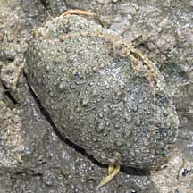
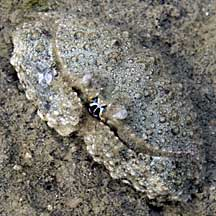
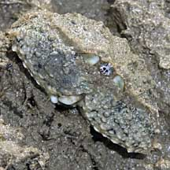
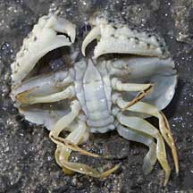
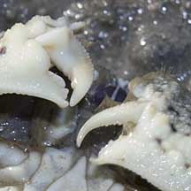
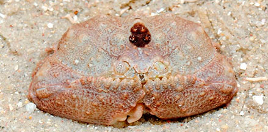

|
|
| crabs text index | photo index |
| Phylum Arthropoda > Subphylum Crustacea > Class Malacostraca > Order Decapoda > Brachyurans | Family Calappidae |
| Reef
box crab Calappa hepatica Family Calappidae updated Dec 2019 Where seen? This small boxy crab is rarely seen. Usually near reefs on our Southern shores. Features: Body width about 4cm. It has small bumps all over its body giving it a beaded look that matches perfectly with the surrounding sand! What does it eat? The pincers of box crabs are specialised for cracking open snail shells. The snail is gripped in the left pincer which has pointed claws. With the right pincer, which is stronger, the crab cuts pieces of the shell from the shell opening. Once the gap is big enough, the crab can enjoy its snail meal. Status and threats: This crab is listed as Vulnerable in the Red Data List of threatened animals of Singapore. |
 Pulau Hantu, Apr 10 |
 |
 |
|
 |
 |
| Reef box crabs on Singapore shores |
On wildsingapore
flickr
|
 Cyrene Reef, May 11 |
|
Links
References
|